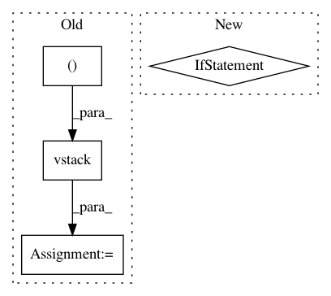

39efccc696a1c20745a52cc50935cdc24f92230d,secuml/core/classif/classifiers/__init__.py,Classifier,_predict_streaming,#Classifier#,146
Before Change
if matrix is None:
matrix = [row]
else:
matrix = np.vstack((matrix, row))
if num_rows >= stream_batch:
ids = instances_ids.get_from_ids(ids)
predictions = self._update_streaming_predictions(predictions,
matrix, ids)
After Change
matrix, ids)
if num_remaining > 0:
matrix = np.vstack(tuple(next(features_iter)
for _ in range(num_remaining)))
ids = instances_ids.ids[-num_remaining:]
ids = instances_ids.get_from_ids(ids)
predictions = self._update_streaming_predictions(predictions,
In pattern: SUPERPATTERN
Frequency: 4
Non-data size: 4
Instances
Project Name: ANSSI-FR/SecuML
Commit Name: 39efccc696a1c20745a52cc50935cdc24f92230d
Time: 2019-05-09
Author: anael.beaugnon@ssi.gouv.fr
File Name: secuml/core/classif/classifiers/__init__.py
Class Name: Classifier
Method Name: _predict_streaming
Project Name: ANSSI-FR/SecuML
Commit Name: 39efccc696a1c20745a52cc50935cdc24f92230d
Time: 2019-05-09
Author: anael.beaugnon@ssi.gouv.fr
File Name: secuml/exp/data/features.py
Class Name: FeaturesFromExp
Method Name: get_matrix
Project Name: interactiveaudiolab/nussl
Commit Name: 514f0df732bfdf0f33f263dd48a936f3f0fb5019
Time: 2016-04-09
Author: eth@nmanilow.com
File Name: nussl/spectral_utils.py
Class Name:
Method Name: e_istft
Project Name: Calamari-OCR/calamari
Commit Name: 8d0d0c7a6db3904f0222cbe058388a92cf21a548
Time: 2021-02-06
Author: ChWick@users.noreply.github.com
File Name: calamari_ocr/ocr/dataset/imageprocessors/center_normalizer.py
Class Name: CenterNormalizer
Method Name: dewarp